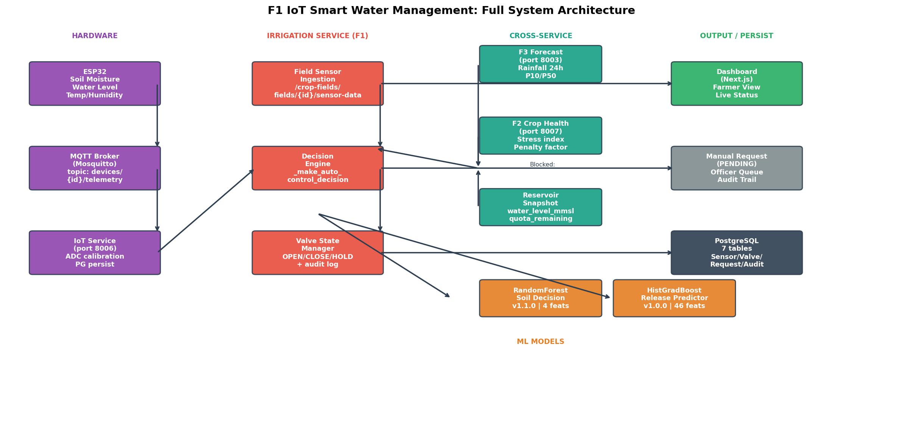

Sri Lankan irrigation schemes such as Udawalawe manage water through reservoir releases, branch canals, seasonal quotas, and farmer-level field decisions. A useful platform must therefore connect field demand with scheme-level storage and release planning.
Domain
Research domain and technical foundation
The platform targets quota-based Sri Lankan irrigation schemes where reservoir releases, field telemetry, crop stress, forecast risk, and seasonal crop allocation must work as one decision system.
Literature survey
Why this domain matters
Smart irrigation is not only a sensor problem. In a canal-command area, every field decision must respect reservoir storage, canal releases, weather risk, crop stress, market value, and authority-level water policy.
IoT soil and water-level sensing improves visibility inside fields, but isolated controllers cannot decide safely unless they also know forecasted rainfall, crop stress severity, reservoir safety limits, and quota availability.
Remote sensing research shows that Sentinel-2 vegetation indices such as NDVI and NDWI can surface crop water stress at zone level, while plant-image transfer learning can provide disease-specific recommendations when a farmer uploads a field photo.
Forecasting and optimization research can support release planning and crop-area allocation, but most prototypes treat these as separate systems. This project studies them as one operating loop where forecast risk and crop stress alter irrigation and crop plans.
Research gap
Integrated intelligence instead of isolated modules
Existing systems usually optimize only one layer: IoT valve control, crop stress detection, reservoir forecasting, or crop planning. The gap is an integrated decision platform where those signals change one another before the farmer or officer acts.
Research problem
Unifying field and scheme-level decisions
How can IoT telemetry, crop health analytics, water forecasting, and crop-area optimization be integrated to reduce water waste and improve crop planning under fixed irrigation quotas in Sri Lankan schemes?
Domain-specific scope
Four domain layers behind the platform
The project scope combines agricultural, hydrological, remote-sensing, and economic context from the documented research material.
Irrigation command-area operations
The project is grounded in canal-based irrigation, where reservoir level, active storage, inflow, rainfall, spillway discharge, and LB/RB main canal releases shape how much water can be issued to fields.
F1 uses Udawalawe records from 1994-2025 and predicts next-day main canal release in MCM.
Field water stress and crop health
The crop-health stream treats water stress as a spatial signal. NDVI measures vegetation vigor, NDWI reflects canopy water content, and a stress index converts zone results into field-level priority.
F2 maps zones into Good, Moderate Stress, and High Stress, then sends priority and penalty to F1 and F4.
Reservoir risk under monsoon uncertainty
The forecasting stream focuses on short-horizon reservoir behavior in Sri Lanka's seasonal rainfall context, where dry spells, sudden inflows, and release timing all matter.
F3 exposes 1-14 day forecasts and P10/P50/P90 scenarios for conservative and optimistic decisions.
Crop economics and seasonal allocation
The optimization stream connects agronomic suitability with volatile Sri Lankan retail prices, Maha/Yala context, water quota, and minimum paddy allocation policies.
F4 combines Hector prices, climate data, suitability weights, and constraints into recommendation responses.
Objectives
Main and specific objectives
The main objective is to design, implement, and validate an integrated smart irrigation and crop optimization platform for water-constrained agriculture.
Automate irrigation decisions
Use ESP32 telemetry, crop threshold tables, a Random Forest valve classifier, and reservoir release prediction to recommend OPEN, CLOSE, or HOLD actions for each field.
Detect crop health and water stress
Combine Sentinel-2 NDVI/NDWI zone analysis with MobileNetV2 image prediction to classify field stress, disease severity, and treatment recommendations.
Forecast rainfall and reservoir risk
Generate 1-14 day water-level and rainfall forecasts, P10/P50/P90 risk bands, and anomaly alerts for drought, flood, and canal demand pressure.
Optimize crop area under quota
Use Fuzzy-TOPSIS, market price prediction, and constrained allocation to recommend crop mixes that respect soil, water, profit, and paddy policy rules.
Methodology
From domain research to integrated prototype
The methodology follows a research-to-system path: define the water-management problem, engineer stream-specific datasets, train suitable models, then connect their outputs through service contracts and decision rules.

-
1
Domain study and research gap
Define Udawalawe-style irrigation realities and service boundaries across field operations and quota governance.
-
2
Data acquisition and cleaning
Build stream-specific datasets from hydrology, Sentinel-2, PlantVillage, forecasting records, climate and market sources.
-
3
Feature engineering and modelling
Engineer domain-shaped predictors: release lags, rolling rainfall, NDVI/NDWI thresholds, monsoon encoding, price lags, and stress constraints.
-
4
Decision logic and integration
Convert model outputs into actions through service rules, signals, and role-safe workflows across F1-F4.
-
5
Evaluation and limitation tracking
Record strong results and known weaknesses, then keep a concrete roadmap for field-validation and solver improvements.
Research stream detail
What each module actually contributes
Each stream owns a different domain problem, dataset, model family, evaluation result, and integration contract inside the full platform.
F1 - Reservoir-to-field irrigation control
Dataset: 32 year-sheets (1994-2025), 11,687 daily records and 10,945 model-ready rows.
Method: HistGradientBoostingRegressor for next-day release + RandomForestClassifier for field valve actions.
Evaluation: MAE 0.4412 MCM, RMSE 0.7108 MCM, R2 0.7949 on 2023-2025 test set.
Integration: Uses F3 rain forecasts and F2 stress priority before final action gating.
Future work: Replace synthetic valve labels with field logs.
F2 - Remote sensing and disease priority
Dataset: Sentinel-2 Level-2A imagery at 10m and PlantVillage 38-class crop-image data.
Method: NDVI/NDWI zone classification plus MobileNetV2 transfer learning for uploaded images.
Evaluation: RF ~99% on index-derived labels; MobileNetV2 best validation accuracy 95.43%.
Integration: Produces stress priority and penalty factors for F1 and F4.
Future work: Add field-verified stress labels for stronger validation.
F3 - Water-level forecasting and risk bands
Dataset: Current notebook loads only first 1994 sheet, giving 358 cleaned rows.
Method: RF, GB, LSTM, quantile models plus service-layer ensemble and anomaly architecture.
Evaluation: Best current notebook model GB: RMSE 2.8763 mMSL, MAE 2.7027 mMSL.
Integration: Provides 1-14 day forecasts and P10/P50/P90 scenarios to F1 and F4.
Future work: Multi-sheet loading to move from 365 to ~11,687 rows.
F4 - Adaptive crop and area optimization
Dataset: 71,737 Hector price records + climate, paddy cultivation, and rice series support data.
Method: Fuzzy-TOPSIS ranking, price/yield signals, and constrained allocation under quota and policy rules.
Evaluation: Price NN MAE Rs. 115.66/kg, RMSE Rs. 175.81/kg with stable 5-fold behavior.
Integration: Pulls water from F1, stress from F2, and forecast scenarios from F3.
Future work: Replace active greedy allocation with full PuLP LP solver.
Evidence and metrics
Research results kept visible
The site presents results from documented notebooks and service research, including limitations where evidence is still maturing.
F1 - Release prediction
RMSE 0.7108 MCM
HistGradientBoosting on 2023-2025 test data from the 32-sheet workbook.
F2 - Disease classification
95.43% val accuracy
MobileNetV2 transfer learning across 38 PlantVillage classes.
F3 - Best current forecast
RMSE 2.8763 mMSL
Gradient Boosting on limited 1994 subset; full multi-year fix documented.
F4 - Price prediction
MAE Rs. 115.66/kg
PricePredictorNN on Hector-derived crop price data as market signal.
Cross-service loop
How one stream changes another
Predictions become operational signals that affect irrigation, crop ranking, water budgeting, and mid-season Plan B decisions.
F2 Crop Health → F1 Irrigation
High or critical stress can elevate an OPEN request and increase officer attention.
F3 Forecasting → F1 Irrigation
Forecasted rain can reduce valve position or suppress unnecessary watering.
F1 Irrigation → F4 Optimization
The optimizer uses live water availability as a hard constraint for crop-area allocation.
F3 Forecasting → F4 Optimization
Crop plans can be evaluated under conservative, expected, and optimistic water conditions.
F2 Crop Health → F4 Optimization
Stressed fields receive reduced effective suitability before crop ranking.
Technologies used
A production-style research stack
The implementation combines web engineering, IoT communication, geospatial analysis, machine learning, optimization, and deployment infrastructure.
Backend services and APIs
Independent microservices expose typed REST contracts across irrigation, crop health, forecasting, optimization, auth, IoT, and gateway routing.
Data, telemetry, and messaging
Operational readings, recommendations, event streams, and cached context move through the platform data layer.
Machine learning and optimization
Each stream uses the model family that fits its domain: trees, transfer learning, statistical forecasting, and optimization.
Frontend and infrastructure
Typed frontend routes and deployment assets support repeatable demonstrations and final evaluation.
Remote sensing and climate sources
The domain layer depends on satellite imagery, weather APIs, and Sri Lankan operational datasets.
IoT and control layer
Field hardware and control logic keep the research linked to real irrigation actions, not only dashboards.
Limitations and future work
A transparent research roadmap
The project documents where the current prototype is strong, and where additional field evidence, data cleaning, or solver maturity is still required.
Replace F1 synthetic valve labels with real Udawalawe sensor and actuator logs from field trials.
Validate F2 satellite stress labels with agronomist or field-survey ground truth beyond NDVI/NDWI proxy rules.
Fix F3 multi-sheet loading so forecasting trains on the full 1994-2025 workbook rather than only 1994.
Move F4 allocation from active greedy heuristic to documented PuLP linear programming solver.
Recalibrate thresholds and weights before applying to irrigation schemes outside Udawalawe.
Service ownership
F1 Irrigation - irrigation_service (port 8002)
Field telemetry, crop thresholds, reservoir safety gates, and ML predictions are fused into valve actions.
F2 Crop Health - crop_health_and_water_stress_detection (port 8007)
Remote-sensing zone analysis and image diagnosis identify stress early enough for intervention.
F3 Forecasting - forecasting_service (port 8003)
Reservoir and rainfall forecasts provide drought and flood risk context for downstream planning.
F4 ACA-O - optimize_service (port 8004)
Suitability and economic signals are combined into quota-safe crop-area recommendations.